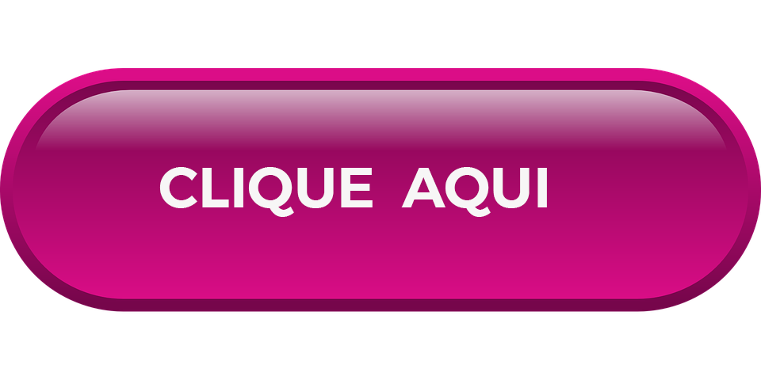

O movimento internacional de conscientização para a detecção precoce do câncer de mama, Outubro Rosa, foi criado no início da década de 1990, quando o símbolo da prevenção ao câncer de mama — o laço cor-de-rosa — foi lançado pela Fundação Susan G. Komen for the Cure e distribuído aos participantes da primeira Corrida pela Cura, realizada em Nova York (EUA) e, desde então, promovida anualmente. O período é celebrado no Brasil e no exterior com o objetivo de compartilhar informações e promover a conscientização sobre o câncer de mama, a fim de contribuir para a redução da incidência e da mortalidade pela doença. O objetivo do Outubro Rosa 2023 é divulgar informações sobre o câncer de mama e fortalecer as recomendações do Ministério da Saúde para prevenção, diagnóstico precoce e rastreamento da doença.
